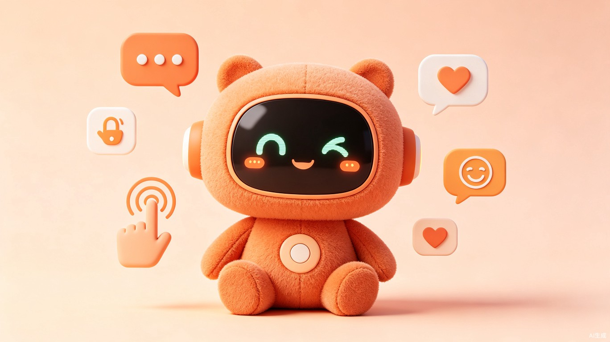

一只真正"懂你情绪"的毛绒伙伴 — 基于豆包RTC全模态对话式AI方案，端到端延迟≤1秒，语音+视觉+触觉三模态情感感知

我是一名产品经理，日常和需求文档、用户调研、竞品分析打交道。技术背景不算深厚，但对 AI 产品有着很强的热情和好奇心。
说实话，最开始我只是脑子里有个模糊的想法 — "能不能做一个真正懂情绪的毛绒机器人"。作为一个没有深厚技术背景的产品经理，面对硬件选型、嵌入式固件、RTC通信协议、AI模型对接这些硬核领域，我一度觉得这个项目离自己很远。
但 TRAE 改变了这一切。
我的方式其实很朴素：就是把脑子里想的，用大白话一句句"讲"给 TRAE 听。从"我要做一款智能毛绒机器人"开始，到"需要支持触摸交互"，到"要能识别语音里的情绪"……每一步，我都在对话中不断补充细节、修正方向。
有几个瞬间让我印象特别深刻：
我只说了一句"帮我调研下智能毛绒机器人赛道"，TRAE 就从市场数据、竞品分析到技术趋势，完整输出了一份专业级的研究报告。原本我预计要花两周的调研工作，一个对话就搞定了。
从概念到系统架构是最难的一步。我完全不懂 RTC 通信、嵌入式固件该怎么拆分。但 TRAE 帮我把整个系统拆成了 8 个可并行开发的模块（M1硬件-M8云服务），每个模块都有清晰的接口定义和验收标准。这个坎，它帮我跨过去了。
从设计方案到可交互的 Demo，我只需要说"帮我把这个做成一个可以体验的 Demo"，一个纯前端的交互原型就出来了 — 包含机器人形象、对话面板、触摸交互、情感分析面板，直接浏览器打开就能体验。
整个过程中，TRAE 不只是一个代码生成工具，更像是一个"什么都懂的技术合伙人"。我负责想清楚"做什么"和"为什么做"，它负责把"怎么做"变成现实。这种配合方式，让我这个产品经理也能独立完成一个从 0 到 1 的 AI 硬件产品 Demo。
一款面向儿童和年轻群体的全模态情感陪伴智能毛绒机器人，产品形态为毛绒玩具 + 内嵌表情显示屏 + 触觉传感器，核心基于火山引擎豆包RTC全模态对话式AI方案驱动。
| 用户画像 | 年龄 | 核心需求 | 付费意愿 |
|---|---|---|---|
| 儿童用户 | 4-10岁 | 睡前陪伴、故事时间、情感倾诉、玩伴对话 | 家长代付 |
| Z世代独居青年 | 18-35岁 | 情绪价值、深夜倾诉、日常闲聊、性格养成 | 自我付费 |
| 银发群体 | 60岁以上 | 日常陪伴、健康提醒、情感慰藉 | 子女代付 |
基于豆包RTC方案实现端到端语音延迟≤1秒，支持ASR语音识别、LLM智能对话、TTS语音合成全链路。支持打断插话、上下文记忆，对话节奏接近真人交流。
融合语音情感分析（语调/语速/音高）、视觉表情识别、触摸语义理解三种输入模态，精准识别用户情绪状态，实现真正的"懂你"。
不仅说话，还会"表达" — 通过表情屏显示10+种动态表情、RGB灯光随情绪变色、触觉反馈（如被摸时"咕噜"震动），打造沉浸式陪伴体验。
基于云端向量记忆系统，记住用户偏好、重要事件和对话历史。每次交流都是长期关系的一部分，机器人会越来越"懂你"。
以下是交互 Demo 的界面截图，展示了机器人的核心交互功能：
✨ 完整交互 Demo 请见下方第 3 部分的体验地址
灵感来自两个观察。第一，CES 2026上超过30家中国AI玩具/陪伴机器人企业亮相，赛道正处于爆发期，但市面上的产品大多只做到了"能对话"，距离"能共情"还有很大差距。第二，我注意到身边的独居朋友和有孩子的家庭，对"情绪价值"的需求远超"功能价值" — 他们想要的不是另一个智能音箱，而是一个真正能感知情绪、有温度的陪伴者。
经过调研，我发现市面上的智能毛绒机器人普遍存在三个核心短板：
我的判断是：用户愿意为一个"真正懂自己情绪"的毛绒陪伴机器人支付溢价（300-500元价位带），前提是它的情感回应质量显著高于现有产品。因此在方向选择上，我做了一个关键取舍：放弃"教育工具"定位，聚焦"情感陪伴"。不做知识问答、不做英语学习，只做一件事 — 让用户觉得"它真的懂我"。
技术路线上，选择火山引擎豆包RTC全模态对话式AI方案作为技术底座，核心考量是：RTC传输方案的UDP协议能实现≤1秒的端到端延迟，且80%丢包环境下仍保持可用，这是"自然对话感"的技术基础。同时豆包家族模型（ASR + LLM + TTS + 情感模型）全链路打通，模型间协同优化效果最大化，火山引擎每月提供10000分钟免费额度，有效降低初期运营成本。
本 Demo 为纯前端实现（HTML/CSS/JS），无需后端服务，可直接用浏览器打开运行。已打包为 ZIP 格式上传，内含完整的交互 Demo 文件和设计方案文档。
design-spec.html — 完整的产品设计方案（含系统架构、8大模块任务拆分、竞品分析、成本估算）
demo.html — 可交互的前端 Demo（支持文字对话、触摸交互、情感分析面板、系统状态显示）
M1-M8 TASK.md — 8个可并行开发模块的详细任务文档
下载 ZIP 包后解压，用浏览器直接打开 demo.html 即可体验交互 Demo；打开 design-spec/design-spec.html 可查看完整设计方案。建议使用 Chrome / Edge 浏览器。
整个 Demo 的开发完全在 TRAE 中完成，从市场调研到方案设计到交互原型，经历了以下完整的流程：
通过对话让 TRAE 搜索智能毛绒机器人赛道的市场数据，调研了 BubblePal、FoloToy、芙崽、Ropet 等核心竞品，输出了包含市场规模、用户画像、竞品对比的完整分析报告。
基于调研结果，与 TRAE 讨论确定产品定位（情感陪伴 > 教育工具）、目标用户（儿童/Z世代/银发）、核心场景（睡前陪伴/情绪共情/日常闲聊/成长记录），输出了一份 2000+ 行的专业级设计方案 HTML。
让 TRAE 将系统拆分为 8 个可并行开发的模块（M1硬件设备、M2嵌入式固件、M3 RTC通信、M4全模态AI交互、M5情感引擎与记忆系统、M6用户端应用、M7家长控制、M8云服务），每个模块输出独立的 TASK.md 任务文档。
基于设计方案，让 TRAE 开发一个纯前端可交互的 Demo，包含机器人形象展示、文字对话面板、触摸交互区域、情感分析面板、系统状态显示、多模态输出指示和快捷按钮功能。
将设计方案、交互 Demo 和模块任务文档统一打包为 ZIP 文件，完成最终的交付物。
以下展示了开发过程中的关键界面截图（设计方案文档、模块任务文档、交互 Demo）：
请参见下方 ZIP 包中的完整文件进行体验和查看，设计方案 HTML 和 Demo HTML 均可直接在浏览器中打开。
以下 Session ID 对应了 Demo 开发过程中的关键任务对话，可双击 TRAE 对话复制验证：
6a4baca3b3a0b962e566dd7f
6a4d0aedeed0c4854c7541a7
6a4d1045eed0c4854c75421a
在竞品对比中，本产品具备三个核心差异化方向：
| 维度 | BubblePal | FoloToy | 芙崽 | Ropet | 本产品 |
|---|---|---|---|---|---|
| 形态 | 挂件 | 毛绒玩具 | 毛绒包挂 | 毛绒+屏幕 | 毛绒+表情屏+触觉 |
| AI模型 | 通用AIGC | 豆包模型 | 自研MEM | ChatGPT | 豆包全模态方案 |
| 响应延迟 | 2-3秒 | 2-3秒 | 约2秒 | 1-2秒 | ≤1秒 |
| 情感识别 | 基础 | 基础 | 多模态MEM | 视觉+声音 | 语音+视觉+触觉 |
| 触觉交互 | 捏合 | 无 | 无 | 触觉传感器 | 电容+压力+震动 |
| 长期记忆 | APP端 | 云端 | EchoChain | 端侧学习 | 云端向量记忆 |
| 价格 | 399元 | 279-499元 | 389-698元 | 1472-3998元 | 299-499元 |